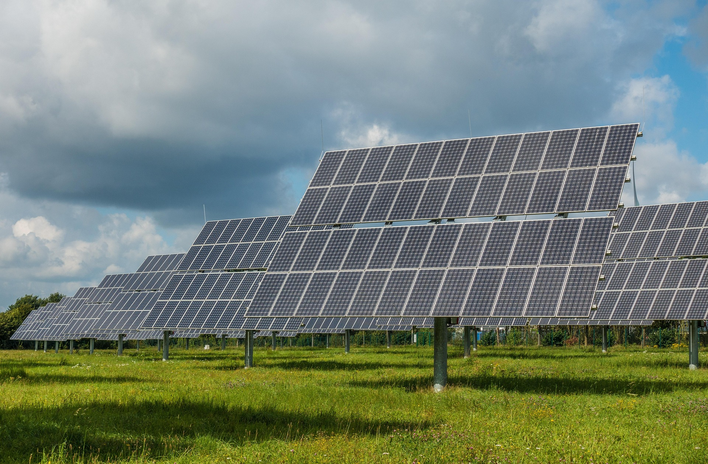
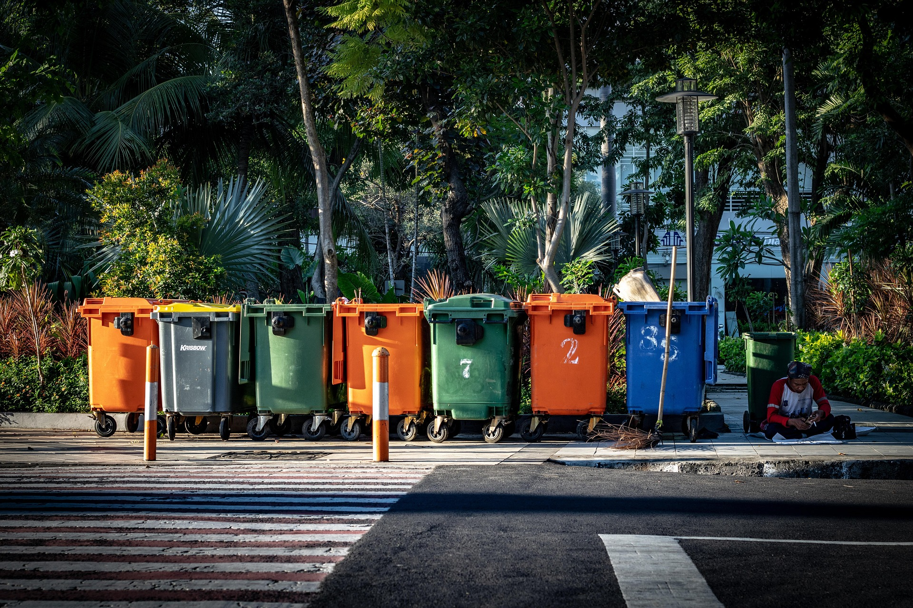
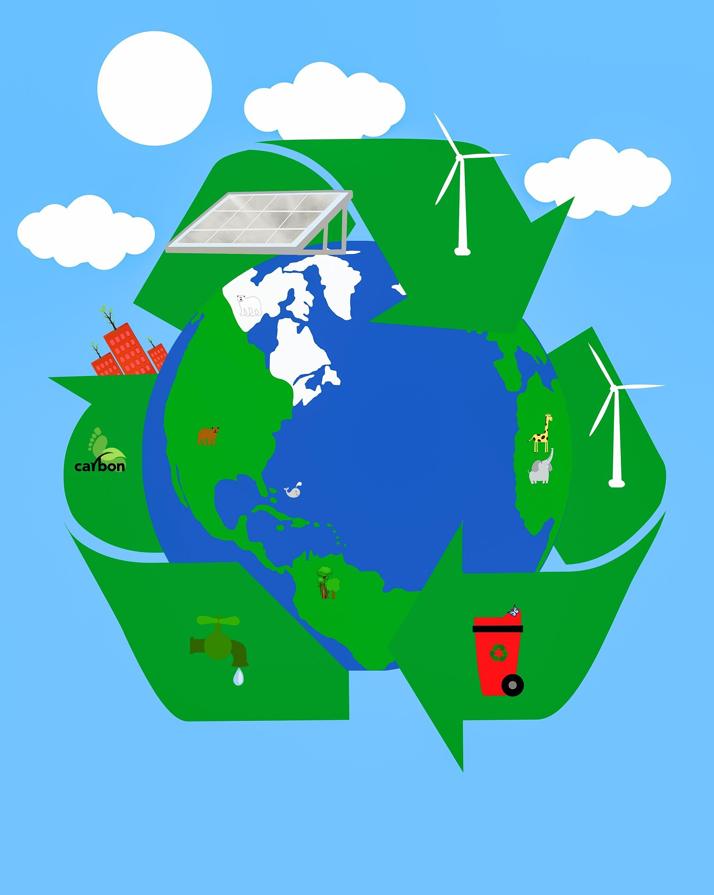

Energy-Efficient Devices

Our energy-efficient devices help businesses reduce power consumption while improving operational efficiency. These systems are designed to support environmentally responsible business practices.
Smart Recycling Systems

GreenTech recycling systems use smart monitoring technology to improve waste management and encourage sustainable recycling habits in offices and public spaces.
Carbon Tracking Software

Our carbon tracking software allows organizations to monitor emissions, analyze sustainability goals, and generate environmental impact reports.
Service Comparison
| Service | Main Benefit | Business Impact |
|---|---|---|
| Energy Devices | Lower energy usage | Reduced operating costs |
| Recycling Systems | Better waste management | Improved sustainability |
| Carbon Tracking | Emission monitoring | Environmental reporting |